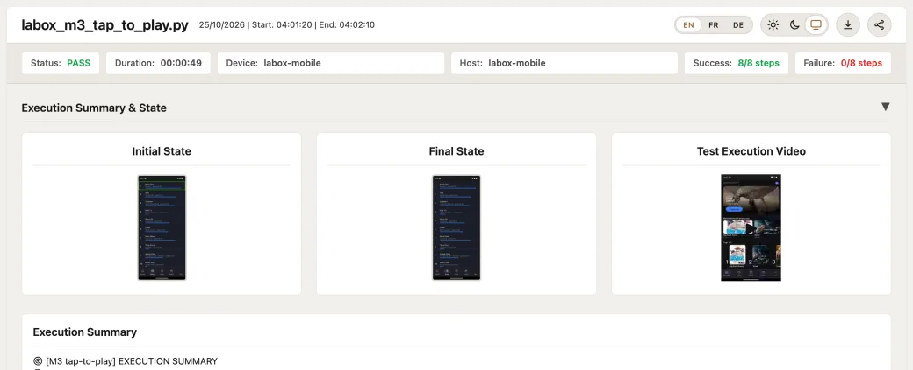
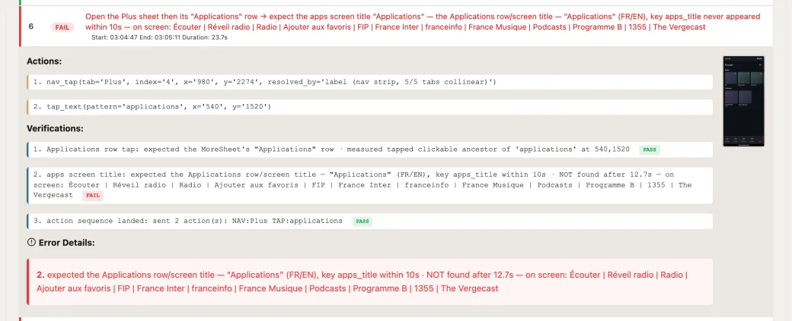

01Navigation
Map your app once. Every test reuses it.
Screens become a reusable graph. Change one, every test follows.
Real remotes, HDMI capture and verification. Open source, no per device licenses.
Reports — pass/fail, KPIs and execution video, every run
Map the app once, prove what's on screen.
Screens become a reusable graph. Change one, every test follows.


Every run keeps the source, the reference and the diff.
A built in MCP server: any AI client can inspect and control a real device.
VirtualPyTest in 60 seconds
Free and open source, nothing sold as an add on.
A visual builder for everyone, full Python for real logic.
Named variants override only what differs per model.
One image and text library, recaptured in one click.
Per minute A/V KPIs, by platform and version.
Watched day and night, alerted the moment it breaks.
See where the fleet hurts, then rewind to 3 a.m.
Hosts, devices and system metrics, with every live screen side by side.
Reads the device's About screen, in any language.
Busy or idle, plus CPU, disk and temperature.
Pass rates, durations and volume, on standard Grafana you own.
By workspace, team and user. Deny always wins.
Nothing to install. Operate the whole lab from anywhere.
Free software. You pay for hardware only, never per device.
Self host on a Raspberry Pi or any Linux PC, or get a ready unit from us.
Yes. VirtualPyTest is open source under the GNU AGPL v3. You can use, modify and self host it at no cost, including for commercial internal use. No paid tiers, no usage limits, no feature gates.
The one obligation: if you distribute a modified version or offer it to others as a service, you must publish your changes under the same license. For commercial licensing outside those terms, talk to us.
Anything that can be remotely controlled: Android and iOS phones and tablets, Android TV, Apple TV, Fire TV and smart TVs, set top boxes with IR or network control, any browser, and Windows, macOS or Linux desktop apps.
Control goes through ADB, Appium, IR blasters, smart TV network APIs or browser automation. Any device with an HDMI output can be captured with a USB capture card.
Test logic and navigation are separate. A navigation tree maps your app once: nodes are screens, edges are the actions that move between them.
Same script on Android, iOS, a set top box or the web. Change a screen once and every test that touches it follows.
Every check runs against what is actually on screen. Image matching, OCR and AI vision detectors confirm the expected content is there, and each result keeps the source frame, the reference and the pixel diff as evidence.
No brittle DOM selectors, so checks survive UI redesigns and work the same on every platform.
Real devices are always captured through an HDMI acquisition card, whether they are set top boxes, TVs, phones or tablets. You see exactly what a viewer sees, with no dependency on the device's own APIs. Only emulators are captured through ADB.
Every run keeps a frame by frame replay and a screenshot timeline you can attach to bug reports.
VirtualPyTest is visual first and platform agnostic: one script for every device, AI vision instead of element selectors, and built in support for set top boxes and TVs through IR and HDMI capture, which Appium and Selenium do not cover. Monitoring and Grafana dashboards are built in.
It complements them rather than replacing them: Appium and Playwright are used under the hood for mobile and web.
Yes. Trigger scripts and campaigns through the REST API from any pipeline, and receive a completion callback on a URL you provide when a long run finishes. Point your CI at a running server, or launch the stack with the setup scripts as part of the job.
Docker and Docker Compose for the stack, Python 3.11 or newer for local development. Per device: ADB access for Android, a Mac with Xcode and Appium for iOS, an IR blaster or network API for set top boxes and TVs, a USB capture card for HDMI, and Chrome or Firefox for web.
Controllers already exist for Android, iOS, web and IR controlled devices, so most devices only need connection details and a navigation tree, which the AI can help build. For a new platform, implement the controller interface once and every feature works with it.
Any client that speaks MCP, such as Claude Desktop or Cursor. The built in server exposes 77 tools: take control of a device, navigate, verify, capture the screen, run tests and read the results.
Yes. A phone from your farm account joins the fleet as an ordinary device, with the same navigation graph, scripts and reports. You keep your own farm account; we never resell the minutes.
Yes. Every device's screen is recorded for 24 hours. The fleet heatmap shows where incidents happened, and you can scrub back to the exact minute.
Nothing to install. Watch a real lab live, on a read only account.